The end of my childhood
2024 Jan 31
See all posts
The end of my childhood
One of my most striking memories from my last two years was speaking
at hackathons, visiting hacker houses, and doing Zuzalu
in Montenegro, and seeing people a full decade younger than myself
taking on leading roles, as organizers or as developers, in all kinds of
projects: crypto auditing, Ethereum layer 2 scaling, synthetic biology
and more. One of the memes of the core organizing team at Zuzalu was the
21-year-old Nicole Sun, and
a year earlier she had invited me to visit a hacker house in South
Korea: a ~30-person gathering where, for the first time that I can
recall, I was by a significant margin the oldest person in the room.
When I was as old as those hacker house residents are now, I remember
lots of people lavishing me with praise for being one of these fancy
young wunderkinds transforming the world like Zuckerberg and so on. I
winced at this somewhat, both because I did not enjoy that kind of
attention and because I did not understand why people had to translate
"wonder kid" into German when it works perfectly fine in English. But
watching all of these people go further than I did, younger than I did,
made me clearly realize that if that was ever my role, it is no longer.
I am now in some different kind of role, and it is time for the next
generation to take up the mantle that used to be mine.
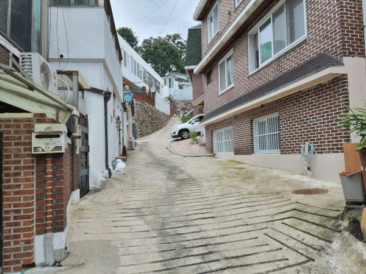
The path leading up to the hacker house in Seoul, August
2022. Photo'd because I couldn't tell which house I was supposed to be
entering and I was communicating with the organizers to get that
information. Of course, the house ended up not being on this path at
all, but rather in a much more visible venue about twenty meters to the
right of it.
1
As a proponent of life extension (meaning, doing the medical research
to ensure that humans can literally live thousands or millions of
years), people often ask me: isn't the
meaning of life closely tied to the fact that it's finite: you only have
a small bit, so you have to enjoy it? Historically, my instinct has been
to dismiss this idea: while is it true as a matter of
psychology that we tend to value things more if they are limited or
scarce, it's simply absurd to argue that the ennui of a great prolonged
existence could be so bad that it's worse than literally no longer
existing. Besides, I would sometimes think, even if eternal life proved
to be that bad, we could always simultaneously dial up our "excitement"
and dial down our longevity by simply choosing to hold more wars. The
fact that the non-sociopathic among us reject that option today strongly
suggests to me that we would reject it for biological death and
suffering as well, as soon as it becomes a practical option to do
so.
As I have gained more years, however, I realized that I do not even
need to argue any of this. Regardless of whether our lives as a whole
are finite or infinite, every single beautiful thing in our lives is
finite. Friendships that you thought are forever turn out to slowly
fade away into the mists of time. Your personality can
completely change in 10 years. Cities can transform completely, for
better or sometimes for worse. You may move to a new city yourself, and
restart the process of getting acquainted with your physical environment
from scratch. Political ideologies are finite: you may build up an
entire identity around your views on top marginal tax rates and public
health care, and ten years later feel completely lost once people seem
to completely stop caring about those topics and switch over to spending
their whole time talking about "wokeness", the "Bronze Age mindset" and
"e/acc".
A person's identity is always tied to their role in the
broader world that they are operating in, and over a decade, not only
does a person change, but so does the world around them. One
change in my thinking that I have written
about before is how my thinking involves less economics than it did
ten years ago. The main cause of this shift is that I spent a
significant part of the first five years of my crypto life trying to
invent the mathematically provably optimal governance mechanism, and
eventually I discovered some fundamental
impossibility results that made it clear to me that (i) what I was
looking for was impossible, and (ii) the most important variables that
make the difference between existing flawed systems succeeding or
failing in practice (often, the degree of coordination between subgroups
of participants, but also other things that we often black-box as "culture")
are variables that I was not even modeling.
Before, mathematics was a primary part of my identity: I was heavily
involved in math competitions in high school, and soon after I got
into crypto, I began doing a lot of coding, in Ethereum,
Bitcoin
and elsewhere, I was getting excited about every new cryptography
protocol, and economics too seemed to me to be part of that broader
worldview: it's the mathematical tool for understanding and figuring out
how to improve the social world. All the pieces neatly fit together.
Now, those pieces fit together somewhat less. I do still use mathematics
to analyze social mechanisms, though the goal is more often to come up
with rough first-pass guesses about what might work and mitigate
worst-case behavior (which, in a real-world setting, would be
usually done by bots and not humans) rather than explain average-case
behavior. Now, much more of my writing and thinking, even when
supporting the same
kinds of ideals that I supported a decade ago, often uses very
different kinds of arguments.
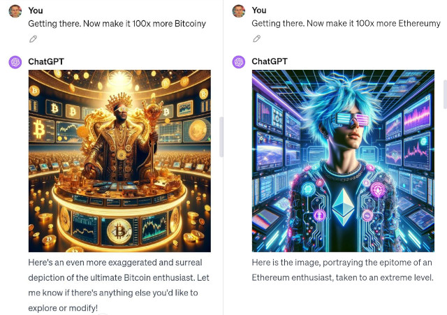
One thing that fascinates me about modern AI is that it
lets us mathematically and philosophically engage with the hidden
variables guiding human interaction in a different way: AI can
make "vibes" legible.
All of these deaths, births and rebirths, whether of ideas or
collections of people, are ways in which life is finite. These deaths
and births would continue to take place in a world where we lived two
centuries, a millennium, or the same lifetime as a main-sequence star.
And if you personally feel like life doesn't have enough
finiteness and death and rebirth in it, you don't have to start wars to
add more: you can also just make the same choice that I did and become a
digital nomad.
2
"Grads are falling in Mariupol".
I still remember anxiously watching the computer screen in my hotel
room in Denver, on February 23, 2022, at 7:20 PM local time. For the
past two hours, I had been simultaneously scrolling Twitter for updates
and repeatedly pinging my dad, who has having the very same thoughts and
fears that I was, until he finally sent me that fateful reply. I sent
out a tweet making my position on the issue as
clear as possible and I kept watching. I stayed up very late that
night.
The next morning I woke up to the Ukraine government twitter
account desperately asking for donations in cryptocurrency. At
first, I thought that there is no way this could be real, and I became
very worried that the account was opportunistically hacked: someone,
perhaps the Russian government itself, taking advantage of everyone's
confusion and desperation to steal some money. My "security mindset"
instinct took over, and I immediately started tweeting to warn people to
be careful, all while going through my network to find people who could
confirm or deny if the ETH address is genuine. An hour later, I was
convinced that it was in fact genuine, and I publicly relayed my
conclusion. And about an hour after that, a family member sent me a
message pointing out that, given what I had already done, it would be
better for my safety for me to not go back to Russia again.
Eight months later, I was watching the crypto world go through a
convulsion of a very different sort: the extremely public demise of Sam
Bankman-Fried and FTX. At the time, someone posted on Twitter a long
list of "crypto main characters", showing which ones had fallen and
which ones were still intact. The casualty rate was massive:
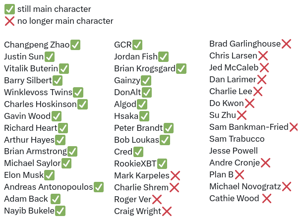
The SBF situation was not unique: it mix-and-matched aspects of MtGox
and several other convulsions that had engulfed the crypto space before.
But it was a moment where I realized, all at once, that most of the
people I had looked up to as guiding lights of the crypto space that I
could comfortably follow in the footsteps of back in 2014 were no
more.
People looking at me from afar often think of me as a high-agency
person, presumably because this is what you would expect of a "main
character" or a "project founder" who "dropped out of college". In
reality, however, I was anything but. The virtue I valorized as a kid
was not the virtue of creativity in starting a unique new project, or
the virtue of showing bravery in a once-in-a-generation moment that
calls for it, but rather the virtue of being a good student who shows up
on time, does his homework and gets a 99 percent average.
My decision to drop out of college was not some kind of big brave
step done out of conviction. It started with me in early 2013 deciding
to take a co-op
term in the summer to work for Ripple. When US visa complications
prevented that, I instead spent the summer working with my Bitcoin
Magazine boss and friend Mihai Alisie in Spain. Near the end of August,
I decided that I needed to spend more time exploring the crypto world,
and so I extended my vacation to 12 months. Only in January
2014, when I saw the social proof of hundreds of people cheering on
my presentation introducing Ethereum at BTC Miami, did I finally realize
that the choice was made for me to leave university for good. Most of my
decisions in Ethereum involved responding to other people's
pressures and requests. When I met Vladimir
Putin in 2017, I did not try to arrange the meeting;
rather, someone else suggested it, and I pretty much said "ok sure".
Now, five years later, I finally realized that (i) I had been
complicit in legitimizing a genocidal dictator, and (ii) within the
crypto space too, I no longer had the luxury of sitting back and letting
mystical "other people" run the show.
These two events, as different as they are in the type and
the scale of their tragedy, both burned into my mind a similar lesson:
that I actually have responsibilities in this world, and I need to be
intentional about how I operate. Doing nothing, or living on autopilot
and letting myself simply become part of the plans of others, is not an
automatically safe, or even blameless, course of action. I
was one of the mystical other people, and it was up to me to play
the part. If I do not, and the crypto space either stagnates or becomes
dominated by opportunistic money-grabbers more than it otherwise would
have as a result, I have only myself to blame. And so I decided to
become careful in which of others' plans I go along with, and more
high-agency in what plans I craft myself: fewer ill-conceived meetings
with random powerful people who were only interested in me as a source
of legitimacy, and more things
like Zuzalu.
The Zuzalu flags in Montenegro, spring 2023.
3
On to happier things - or at least, things that are challenging in
the way that a math puzzle is challenging, rather than challenging in
the way that falling down in the middle of a run and needing to walk 2km
with a bleeding knee to get medical attention is challenging (no, I
won't share more details; the internet has already proven top notch at
converting a photo of me with a rolled-up
USB cable in my pocket into an internet meme insinuating something
completely different, and I certainly do not want to give those
characters any more ammunition).
I have talked
before about the changing role of economics, the need to think
differently about motivation (and coordination: we are social creatures,
so the two are in fact intimately linked), and the idea that the world
is becoming a "dense jungle": Big Government, Big Business, Big Mob, and
Big X for pretty much any X will all continue to grow, and they will
have more and more frequent and complicated interactions with each
other. What I have not yet talked as much about is how many of these
changes affect the crypto space itself.
The crypto space was born in late 2008, in the aftermath of the
Global Financial Crisis. The genesis block of the Bitcoin blockchain
contained a reference to this famous article from the UK's The
Times:
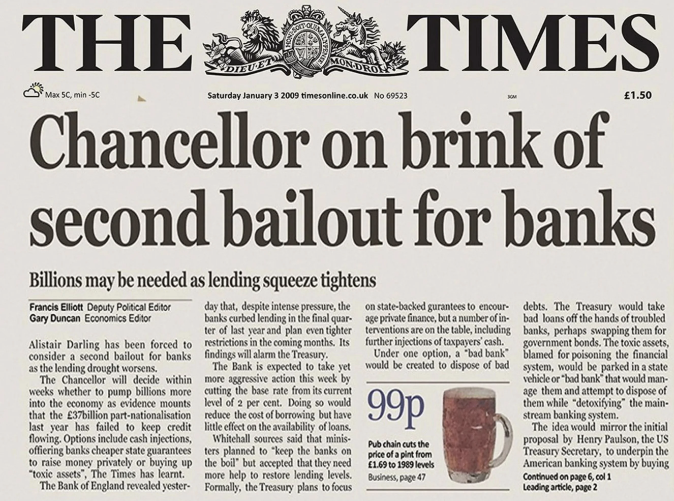
The early memes of Bitcoin were heavily influenced by these themes.
Bitcoin is there to abolish the banks, which is a good thing to do
because the banks are unsustainable megaliths that keep creating
financial crises. Bitcoin is there to abolish fiat currency, because the
banking system can't exist without the underlying central banks and the
fiat currencies that they issue - and furthermore, fiat currency enables
money printing which can fund wars. But Iin the fifteen years since
then, the broader public discourse as a whole seems to have to a large
extent moved beyond caring about money and banks. What is considered
important now? Well, we can ask the copy of Mixtral 8x7b
running on my new GPU laptop:
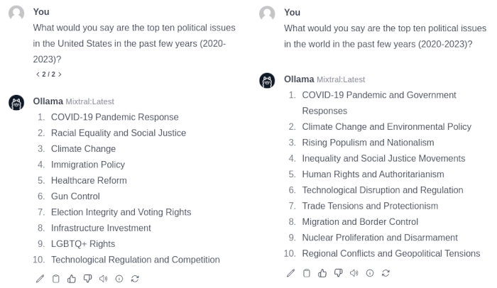
Once again, AI can make vibes
legible.
No mention of money and banks or government control of currency.
Trade and inequality are listed as concerns globally, but from what I
can tell, the problems and solutions being discussed are more in the
physical world than the digital world. Is the original "story" of crypto
falling further and further behind the times?
There are two sensible responses to this conundrum, and I believe
that our ecosystem would benefit from embracing both of them:
- Remind people that money and finance still do matter, and do
a good job of serving the world's underserved in that
niche
- Extend beyond finance, and use our technology to build a
more holistic vision of an alternative, more free and open and
democratic tech stack, and how that could build toward either a broadly
better society, or at least tools to help those who are excluded from
mainstream digital infrastructure today.
- is important, and I would argue that the crypto space is uniquely
positioned to provide value there. Crypto is one of the few tech
industries that is genuinely highly decentralized, with developers
spread out all over the globe:

Source: Electric
Capital's 2023 crypto developer report
Having visited many of the new global hubs of crypto over the past
year, I can confirm that this is the case. More and more of the largest
crypto projects are headquartered in all kinds of far-flung places
around the world, or even nowhere. Furthermore, non-Western developers
often have a unique advantage in understanding the concrete needs of
crypto users in low-income countries, and being able to create products
that satisfy those needs. When I talk to many people from San Francisco,
I get a distinct impression that they think that AI is the only thing
that matters, San Francisco is the capital of AI, and therefore San
Francisco is the only place that matters. "So, Vitalik, why are you not
settled down in the Bay with an O1 visa yet"? Crypto does not need to
play this game: it's a big world, and it only takes one visit to
Argentina or Turkey or Zambia to remind ourselves that many people still
do have important problems that have to do with access to money and
finance, and there is still an opportunity to do the complicated work of
balancing user experience and decentralization to actually solve those
problems in a sustainable way.
The other vision is the one that I outlined in my recent post, "Make
Ethereum Cypherpunk Again". Rather than just focusing on
money, or being an "internet of value", I argued that the Ethereum
community should expand its horizons. We should create an entire
decentralized tech stack - a stack that is independent from the
traditional Silicon Valley tech stack to the same extent that eg. the
Chinese tech stack is - and compete with centralized tech companies at
every level.
Reproducing that table here:
| Banking system |
ETH, stablecoins, L2s for payments, DEXes (note: still need banks
for loans) |
| Receipts |
Links to transactions on block explorers |
| Corporations |
DAOs |
DNS (.com, .io, etc) |
ENS (.eth) |
| Regular email |
Encrypted email (eg. Skiff) |
| Regular messaging (eg. Telegram) |
Decentralized messaging (eg. Status) |
| Sign in with Google, Twitter, Wechat |
Sign in with Ethereum, Zupass,
Attestations via EAS, POAPs, Zu-Stamps...
+ social
recovery |
| Publishing blogs on Medium, etc |
Publishing self-hosted blogs on IPFS (eg. using Fleek) |
| Twitter, Facebook |
Lens, Farcaster... |
| Limit bad actors through all-seeing big brother |
Constrain bad actors through zero knowledge proofs |
After I made that post, some readers reminded me that a major missing
piece from this stack is democratic governance technology:
tools for people to collectively make decisions. This is something that
centralized tech does not really even try to provide, because the
assumption that each indidvidual company is just run by a CEO, and
oversight is provided by... err... a board. Ethereum has benefited
from very primitive forms of democratic governance technology in the
past already: when a series of contentious decisions, such as the DAO
fork and several rounds of issuance decrease, were made in 2016-2017, a
team from Shanghai made a platform called Carbonvote, where ETH holders
could vote on decisions.
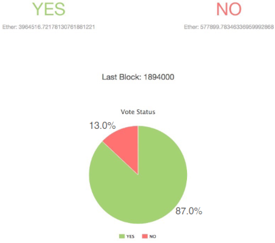
The ETH vote on the DAO fork.
The votes were advisory in nature: there was no hard agreement that
the results would determine what happens. But they helped give core
developers the confidence to actually implement a series of EIPs,
knowing that the mass of the community would be behind them. Today, we
have access to proofs of community membership that are much richer than
token holdings: POAPs, Gitcoin Passport scores, Zu stamps, etc.
From these things all together, we can start to see the second vision
for how the crypto space can evolve to better meet the concerns and
needs of the 21st century: create a more holistic trustworthy,
democratic, and decentralized tech stack. Zero knowledge proofs are key
here in expanding the scope of what such a stack can offer: we can get
beyond the false binary of "anonymous and therefore untrusted" vs
"verified and KYC'd", and prove much more fine-grained statements about
who we are and what permissions we have. This allows us to resolve
concerns around authenticity and manipulation - guarding against "the
Big Brother outside" - and concerns around privacy - guarding against
"the Big Brother within" - at the same time. This way, crypto is not
just a finance story, it can be part of a much broader story of making a
better type of technology.
4
But how, beyond telling stories do we make this happen? Here, we get
back to some of the issues that I raised in my post
from three years ago: the changing nature of motivation. Often,
people with an overly finance-focused theory of motivation - or at
least, a theory of motivation within which financial motives can be
understood and analyzed and everything else is treated as that mysterious
black box we call "culture" - are confused by the space because a
lot of the behavior seems to go against financial motives. "Users don't
care about decentralization", and yet projects still often try hard to
decentralize. "Consensus runs on game theory", and yet successful social
campaigns to chase people off the dominant mining or staking pool have
worked in
Bitcoin and in Ethereum.
It occurred to me recently that no one that I have seen has attempted
to create a basic functional map of the crypto space working "as
intended", that tries to include more of these actors and motivations.
So let me quickly make an attempt now:
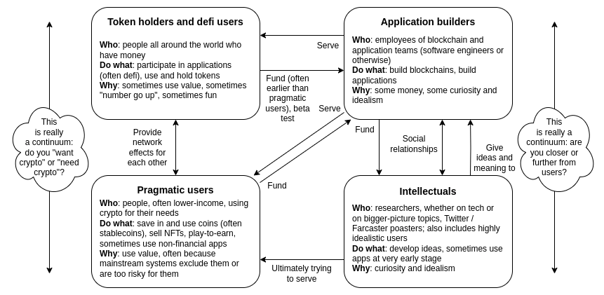
This map itself is an intentional 50/50 mix of idealism and
"describing reality". It's intended to show four major constituencies of
the ecosystem that can have a supportive and symbiotic relationship with
each other. Many crypto institutions in practice are a mix of all
four.
Each of the four parts has something key to offer to the machine as a
whole:
- Token holders and defi users contribute greatly to financing the
whole thing, which has been key to getting technologies like consensus
algorithms and zero-knowledge proofs to production quality.
- Intellectuals provide the ideas to make sure that the space is
actually doing something meaningful.
- Builders bridge the gap and try to build applications that serve
users and put the ideas into practice.
- Pragmatic users are the people we are ultimately serving.
And each of the four groups has complicated motivations, which
interplay with the other groups in all kinds of complicated ways. There
are also versions of each of these four that I would call
"malfunctioning": apps can be extractive, defi users can unwittingly
entrench extractive apps' network effects, pragmatic users can entrench
centralized workflows, and intellectuals can get overly worked up on
theory and overly focus on trying to solve all problems by yelling at
people for being "misaligned" without appreciating that the financial
side of motivation (and the "user inconvenience" side of
demotivation) matters too, and can and should be fixed.
Often, these groups have a tendency to scoff at each other, and at
times in my history I have certainly played a part in this. Some
blockchain projects openly try to cast off the idealism that they see as
naive, utopian and distracting, and focus directly on applications and
usage. Some developers disparage their token holders, and their dirty
love of making money. Still other developers disparage the pragmatic
users, and their dirty willingness to use centralized solutions when
those are more convenient for them.
But I think there is an opportunity to improve understanding
between the four groups, where each side understands that it is
ultimately dependent on the other three, works to limit its own
excesses, and appreciates that in many cases their dreams are less far
apart than they think. This is a form of peace that I think is
actually possible to achieve, both within the "crypto space", and
between it and adjacent communities whose values are highly aligned.
5
One of the beautiful things about crypto's global nature is the
window that it has given me to all kinds of fascinating cultures and
subcultures around the world, and how they interact with the crypto
universe.
I still remember visiting China for the first time in 2014, and
seeing all the signs of brightness and hope: exchanges scaling up to
hundreds of employees even faster than those in the US, massive-scale
GPU and later ASIC farms, and projects with millions of users. Silicon
Valley and Europe, meanwhile, have for a long time been key engines of
idealism in the space, in their two distinct flavors. Ethereum's
development was, almost since the beginning, de-facto headquartered in
Berlin, and it was out of European open-source culture that a lot of the
early ideas for how Ethereum could be used in non-financial applications
emerged.

A diagram of Ethereum and two proposed non-blockchain
sister protocols Whisper and Swarm, which Gavin Wood used in many of his
early presentations.
Silicon Valley (by which, of course, I mean the entire San
Francisco Bay Area), was another hotbed of early crypto interest,
mixed in with various ideologies such as rationalism, effective altruism
and transhumanism. In the 2010s these ideas were all new, and they felt
"crypto-adjacent": many of the people who were interested in them, were
also interested in crypto, and likewise in the other direction.
Elsewhere, getting regular businesses to use cryptocurrency
for payments was a hot topic. In all kind of places in the world, one
would find people accepting Bitcoin, including even Japanese waiters
taking Bitcoin for tips:
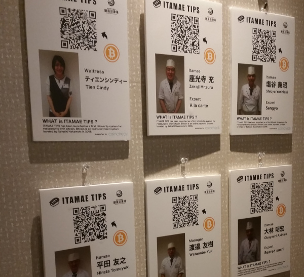
Since then, these communities have experienced a lot of change. China
saw multiple crypto crackdowns, in addition to other broader challenges,
leading to Singapore becoming a new home for many developers. Silicon
Valley splintered internally: rationalists and AI developers, basically
different wings of the same team back as recently as 2020 when Scott Alexander was
doxxed by the New York Times, have since become separate and dueling
factions over the question of optimism vs pessimism about the default
path of AI. The regional makeup of Ethereum changed significantly,
especially during the 2018-era introduction of totally new teams to work
on proof of stake, though more through addition of the new than through
demise of the old. Death, birth and rebirth.
There are many other communities that are worth mentioning.
When I first visited Taiwan many times in 2016 and
2017, what struck me most was the combination of capacity for
self-organization and willingness to learn of the people
there. Whenever I would write a document or blog post, I would often
find that within a day a study club would independently form and start
excitedly annotating every paragraph of the post on Google Docs. More
recently, members of the Taiwanese Ministry of Digital Affairs took a
similar excitement to Glen Weyl's ideas of digital democracy and
"plurality", and soon posted an
entire mind map of the space (which includes a lot of Ethereum
applications) on their twitter account.
Paul Graham has written about how every city sends a message: in New
York, "you should make more money". In Boston, You really should get
around to reading all those books". In Silicon Valley, "you should be
more powerful". When I visit Taipei, the message that comes to my mind
is "you should rediscover your inner high school student".
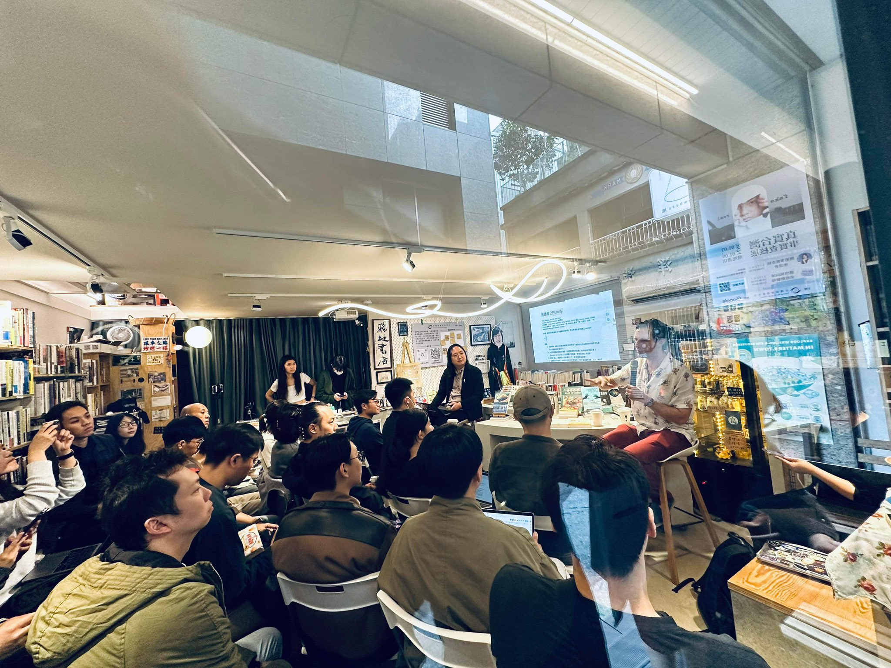
Glen Weyl and Audrey Tang presenting at a study session at
the Nowhere book shop in Taipei, where I had presented on Community Notes four
months earlier
When I visited Argentina several times over the past
few years, I was struck by the hunger and willingness to build and apply
the technologies and ideas that Ethereum and the broader cryptoverse
have to offer. If places like Siilicon Valley are frontiers,
filled with abstract far-mode
thinking about a better future, places like Argentina are
frontlines, filled with an active drive to meet challenges that
need to be handled today: in Argentina's case, ultra-high
inflation and limited connection to global financial systems. The
amount of crypto adoption there is off the charts: I get recognized
in the street more frequently in Buenos Aires than in San
Francisco. And there are many local builders, with a surprisingly
healthy mix of pragmatism and idealism, working to meet people's
challenges, whether it's crypto/fiat conversion or improving the state of Ethereum nodes
in Latin America.

Myself and friends in a coffee shop in Buenos Aires, where
we paid in ETH.
There are far too many others to properly mention: the
cosmopolitanism and highly international crypto communities based in
Dubai, the growing ZK community everywhere in
East and Southeast Asia, the energetic and pragmatic
builders in Kenya, the public-goods-oriented solarpunk
communities of Colorado, and more.
And finally, Zuzalu in 2023 ended up creating a beautiful floating
sub-community of a very different kind, which will hopefully flourish on
its own in the years to come. This is a significant part of what
attracts me about the network states
movement at its best: the idea that cultures and communities are not
just something to be defended and preserved, but also something that can
be actively created and grown.
6
There are many lessons that one learns when growing up, and the
lessons are different for different people. For me, a few are:
- Greed is not the only form of selfishness. Lots of
harm can come from cowardice, laziness, resentment, and many other
motives. Furthermore, greed itself can come in many forms: greed for
social status can often be just as harmful as greed for money or power.
As someone raised in my gentle Canadian upbringing, this was a major
update: I felt like I had been taught to believe that greed for money
and power is the root of most evils, and if I made sure I was not greedy
for those things (eg. by repeatedly fighting to reduce the
portion of the ETH supply premine that went to the top-5 "founders") I
satisfied my responsibility to be a good person. This is of course not
true.
- You're allowed to have preferences without needing to have a
complicated scientific explanation of why your preferences are the true
absolute good. I generally like utilitarianism
and find it often unfairly maligned and wrongly equated with
cold-heartedness, but this is one place where I think ideas like
utilitarianism in excess can sometimes lead human beings astray: there's
a limit to how much you can change your preferences, and so if you push
too hard, you end up inventing reasons for why every single thing you
prefer is actually objectively best at serving general human
flourishing. This often leads you to try to convince others that these
back-fitted arguments are correct, leading to unneeded conflict. A
related lesson is that a person can be a bad fit for you (for any
context: work, friendship or otherwise) without being a bad person in
some absolute sense.
- The importance of habits. I intentionally keep many
of my day-to-day personal goals limited. For example, I try to do one
20-kilometer run a month, and "whatever I can" beyond that. This is
because the only effective habits are the habits that you actually keep.
If something is too difficult to maintain, you will give up on it. As a
digital nomad who regularly jumps continents and makes dozens of flights
per year, routine of any kind is difficult for me, and I have to work
around that reality. Though Duolingo's gamification, pushing you to
maintain a "streak" by doing at least something every day, actually does
work on me. Making active decisions is hard, and so it's always best to
make active decisions that make the most long-term impact on your mind,
by reprogramming your mind to default into a different pattern.
There is a long tail of these that each person learns, and in
principle I could go for longer. But there's also a limit to how much
it's actually possible to learn from simply reading other people's
experiences. As the world starts to change at a more rapid pace, the
lessons that are available from other people's accounts also become
outdated at a more rapid pace. So to a large extent, there is also no
substitute for simply doing things the slow way and gaining personal
experience.
7
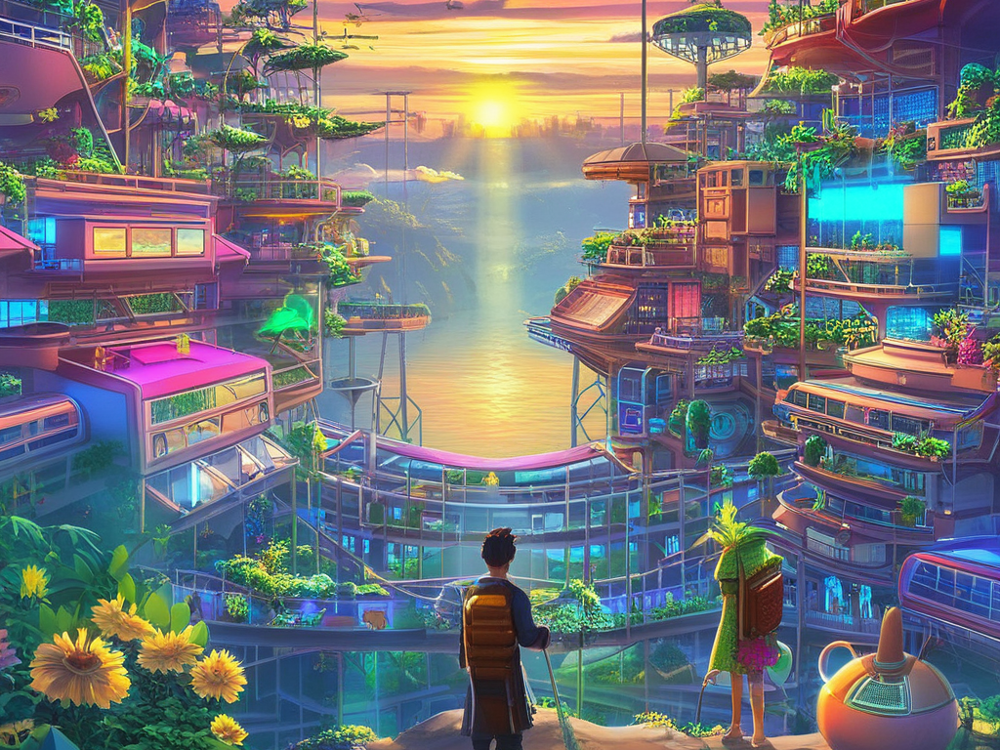
Every beautiful thing in the social world - a community, an ideology,
a "scene", or a country, or at the very small scale a company, a family
or a relationship - was created by people. Even in those few cases where
you could write a plausible story about how it existed since the dawn of
human civilization and the Eighteen Tribes, someone at some point in the
past had to actually write that story. These things are finite - both
the thing in itself, as a part of the world, and the thing as you
experience it, an amalgamation of the underlying reality and your own
ways of conceiving and interpreting it. And as communities, places,
scenes, companies and families fade away, new ones have to be created to
replace them.
For me, 2023 has been a year of watching many things, large and
small, fade into the distance of time. The world is rapidly changing,
the frameworks I am forced to use to try to make sense of the world are
changing, and the role I play in affecting the world is changing. There
is death, a truly inevitable type of death that will continue to be with
us even after the blight of human biological aging and mortality is
purged from our civilization, but there is also birth and rebirth. And
continuing to stay active and doing what we can to create the new is a
task for each one of us.
The end of my childhood
2024 Jan 31 See all postsOne of my most striking memories from my last two years was speaking at hackathons, visiting hacker houses, and doing Zuzalu in Montenegro, and seeing people a full decade younger than myself taking on leading roles, as organizers or as developers, in all kinds of projects: crypto auditing, Ethereum layer 2 scaling, synthetic biology and more. One of the memes of the core organizing team at Zuzalu was the 21-year-old Nicole Sun, and a year earlier she had invited me to visit a hacker house in South Korea: a ~30-person gathering where, for the first time that I can recall, I was by a significant margin the oldest person in the room.
When I was as old as those hacker house residents are now, I remember lots of people lavishing me with praise for being one of these fancy young wunderkinds transforming the world like Zuckerberg and so on. I winced at this somewhat, both because I did not enjoy that kind of attention and because I did not understand why people had to translate "wonder kid" into German when it works perfectly fine in English. But watching all of these people go further than I did, younger than I did, made me clearly realize that if that was ever my role, it is no longer. I am now in some different kind of role, and it is time for the next generation to take up the mantle that used to be mine.
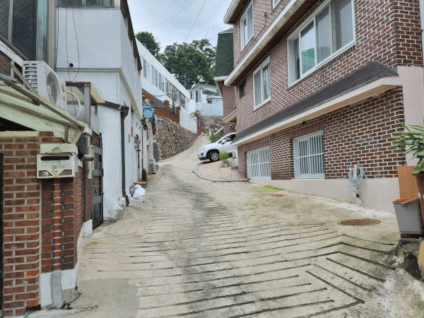
The path leading up to the hacker house in Seoul, August 2022. Photo'd because I couldn't tell which house I was supposed to be entering and I was communicating with the organizers to get that information. Of course, the house ended up not being on this path at all, but rather in a much more visible venue about twenty meters to the right of it.
1
As a proponent of life extension (meaning, doing the medical research to ensure that humans can literally live thousands or millions of years), people often ask me: isn't the meaning of life closely tied to the fact that it's finite: you only have a small bit, so you have to enjoy it? Historically, my instinct has been to dismiss this idea: while is it true as a matter of psychology that we tend to value things more if they are limited or scarce, it's simply absurd to argue that the ennui of a great prolonged existence could be so bad that it's worse than literally no longer existing. Besides, I would sometimes think, even if eternal life proved to be that bad, we could always simultaneously dial up our "excitement" and dial down our longevity by simply choosing to hold more wars. The fact that the non-sociopathic among us reject that option today strongly suggests to me that we would reject it for biological death and suffering as well, as soon as it becomes a practical option to do so.
As I have gained more years, however, I realized that I do not even need to argue any of this. Regardless of whether our lives as a whole are finite or infinite, every single beautiful thing in our lives is finite. Friendships that you thought are forever turn out to slowly fade away into the mists of time. Your personality can completely change in 10 years. Cities can transform completely, for better or sometimes for worse. You may move to a new city yourself, and restart the process of getting acquainted with your physical environment from scratch. Political ideologies are finite: you may build up an entire identity around your views on top marginal tax rates and public health care, and ten years later feel completely lost once people seem to completely stop caring about those topics and switch over to spending their whole time talking about "wokeness", the "Bronze Age mindset" and "e/acc".
A person's identity is always tied to their role in the broader world that they are operating in, and over a decade, not only does a person change, but so does the world around them. One change in my thinking that I have written about before is how my thinking involves less economics than it did ten years ago. The main cause of this shift is that I spent a significant part of the first five years of my crypto life trying to invent the mathematically provably optimal governance mechanism, and eventually I discovered some fundamental impossibility results that made it clear to me that (i) what I was looking for was impossible, and (ii) the most important variables that make the difference between existing flawed systems succeeding or failing in practice (often, the degree of coordination between subgroups of participants, but also other things that we often black-box as "culture") are variables that I was not even modeling.
Before, mathematics was a primary part of my identity: I was heavily involved in math competitions in high school, and soon after I got into crypto, I began doing a lot of coding, in Ethereum, Bitcoin and elsewhere, I was getting excited about every new cryptography protocol, and economics too seemed to me to be part of that broader worldview: it's the mathematical tool for understanding and figuring out how to improve the social world. All the pieces neatly fit together. Now, those pieces fit together somewhat less. I do still use mathematics to analyze social mechanisms, though the goal is more often to come up with rough first-pass guesses about what might work and mitigate worst-case behavior (which, in a real-world setting, would be usually done by bots and not humans) rather than explain average-case behavior. Now, much more of my writing and thinking, even when supporting the same kinds of ideals that I supported a decade ago, often uses very different kinds of arguments.
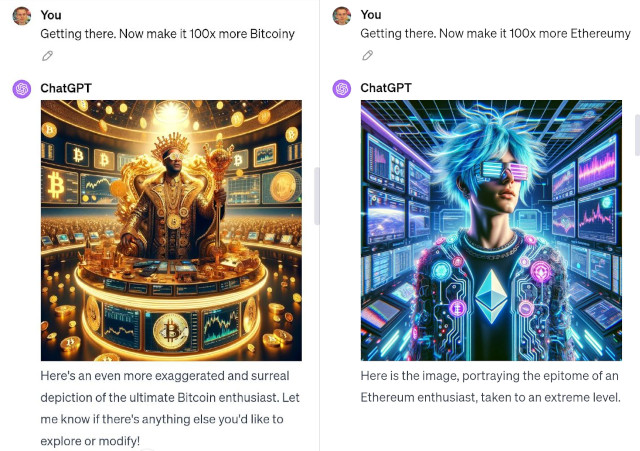
One thing that fascinates me about modern AI is that it lets us mathematically and philosophically engage with the hidden variables guiding human interaction in a different way: AI can make "vibes" legible.
All of these deaths, births and rebirths, whether of ideas or collections of people, are ways in which life is finite. These deaths and births would continue to take place in a world where we lived two centuries, a millennium, or the same lifetime as a main-sequence star. And if you personally feel like life doesn't have enough finiteness and death and rebirth in it, you don't have to start wars to add more: you can also just make the same choice that I did and become a digital nomad.
2
"Grads are falling in Mariupol".
I still remember anxiously watching the computer screen in my hotel room in Denver, on February 23, 2022, at 7:20 PM local time. For the past two hours, I had been simultaneously scrolling Twitter for updates and repeatedly pinging my dad, who has having the very same thoughts and fears that I was, until he finally sent me that fateful reply. I sent out a tweet making my position on the issue as clear as possible and I kept watching. I stayed up very late that night.
The next morning I woke up to the Ukraine government twitter account desperately asking for donations in cryptocurrency. At first, I thought that there is no way this could be real, and I became very worried that the account was opportunistically hacked: someone, perhaps the Russian government itself, taking advantage of everyone's confusion and desperation to steal some money. My "security mindset" instinct took over, and I immediately started tweeting to warn people to be careful, all while going through my network to find people who could confirm or deny if the ETH address is genuine. An hour later, I was convinced that it was in fact genuine, and I publicly relayed my conclusion. And about an hour after that, a family member sent me a message pointing out that, given what I had already done, it would be better for my safety for me to not go back to Russia again.
Eight months later, I was watching the crypto world go through a convulsion of a very different sort: the extremely public demise of Sam Bankman-Fried and FTX. At the time, someone posted on Twitter a long list of "crypto main characters", showing which ones had fallen and which ones were still intact. The casualty rate was massive:
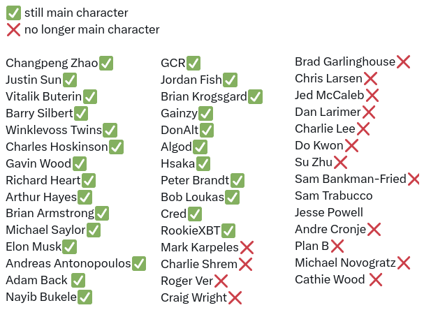
The SBF situation was not unique: it mix-and-matched aspects of MtGox and several other convulsions that had engulfed the crypto space before. But it was a moment where I realized, all at once, that most of the people I had looked up to as guiding lights of the crypto space that I could comfortably follow in the footsteps of back in 2014 were no more.
People looking at me from afar often think of me as a high-agency person, presumably because this is what you would expect of a "main character" or a "project founder" who "dropped out of college". In reality, however, I was anything but. The virtue I valorized as a kid was not the virtue of creativity in starting a unique new project, or the virtue of showing bravery in a once-in-a-generation moment that calls for it, but rather the virtue of being a good student who shows up on time, does his homework and gets a 99 percent average.
My decision to drop out of college was not some kind of big brave step done out of conviction. It started with me in early 2013 deciding to take a co-op term in the summer to work for Ripple. When US visa complications prevented that, I instead spent the summer working with my Bitcoin Magazine boss and friend Mihai Alisie in Spain. Near the end of August, I decided that I needed to spend more time exploring the crypto world, and so I extended my vacation to 12 months. Only in January 2014, when I saw the social proof of hundreds of people cheering on my presentation introducing Ethereum at BTC Miami, did I finally realize that the choice was made for me to leave university for good. Most of my decisions in Ethereum involved responding to other people's pressures and requests. When I met Vladimir Putin in 2017, I did not try to arrange the meeting; rather, someone else suggested it, and I pretty much said "ok sure".
Now, five years later, I finally realized that (i) I had been complicit in legitimizing a genocidal dictator, and (ii) within the crypto space too, I no longer had the luxury of sitting back and letting mystical "other people" run the show.
These two events, as different as they are in the type and the scale of their tragedy, both burned into my mind a similar lesson: that I actually have responsibilities in this world, and I need to be intentional about how I operate. Doing nothing, or living on autopilot and letting myself simply become part of the plans of others, is not an automatically safe, or even blameless, course of action. I was one of the mystical other people, and it was up to me to play the part. If I do not, and the crypto space either stagnates or becomes dominated by opportunistic money-grabbers more than it otherwise would have as a result, I have only myself to blame. And so I decided to become careful in which of others' plans I go along with, and more high-agency in what plans I craft myself: fewer ill-conceived meetings with random powerful people who were only interested in me as a source of legitimacy, and more things like Zuzalu.
The Zuzalu flags in Montenegro, spring 2023.
3
On to happier things - or at least, things that are challenging in the way that a math puzzle is challenging, rather than challenging in the way that falling down in the middle of a run and needing to walk 2km with a bleeding knee to get medical attention is challenging (no, I won't share more details; the internet has already proven top notch at converting a photo of me with a rolled-up USB cable in my pocket into an internet meme insinuating something completely different, and I certainly do not want to give those characters any more ammunition).
I have talked before about the changing role of economics, the need to think differently about motivation (and coordination: we are social creatures, so the two are in fact intimately linked), and the idea that the world is becoming a "dense jungle": Big Government, Big Business, Big Mob, and Big X for pretty much any X will all continue to grow, and they will have more and more frequent and complicated interactions with each other. What I have not yet talked as much about is how many of these changes affect the crypto space itself.
The crypto space was born in late 2008, in the aftermath of the Global Financial Crisis. The genesis block of the Bitcoin blockchain contained a reference to this famous article from the UK's The Times:
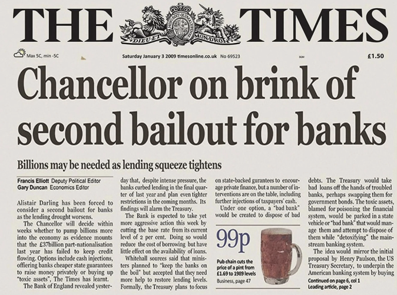
The early memes of Bitcoin were heavily influenced by these themes. Bitcoin is there to abolish the banks, which is a good thing to do because the banks are unsustainable megaliths that keep creating financial crises. Bitcoin is there to abolish fiat currency, because the banking system can't exist without the underlying central banks and the fiat currencies that they issue - and furthermore, fiat currency enables money printing which can fund wars. But Iin the fifteen years since then, the broader public discourse as a whole seems to have to a large extent moved beyond caring about money and banks. What is considered important now? Well, we can ask the copy of Mixtral 8x7b running on my new GPU laptop:
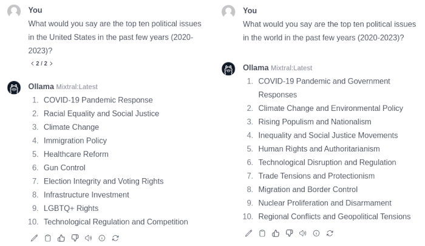
Once again, AI can make vibes legible.
No mention of money and banks or government control of currency. Trade and inequality are listed as concerns globally, but from what I can tell, the problems and solutions being discussed are more in the physical world than the digital world. Is the original "story" of crypto falling further and further behind the times?
There are two sensible responses to this conundrum, and I believe that our ecosystem would benefit from embracing both of them:
Source: Electric Capital's 2023 crypto developer report
Having visited many of the new global hubs of crypto over the past year, I can confirm that this is the case. More and more of the largest crypto projects are headquartered in all kinds of far-flung places around the world, or even nowhere. Furthermore, non-Western developers often have a unique advantage in understanding the concrete needs of crypto users in low-income countries, and being able to create products that satisfy those needs. When I talk to many people from San Francisco, I get a distinct impression that they think that AI is the only thing that matters, San Francisco is the capital of AI, and therefore San Francisco is the only place that matters. "So, Vitalik, why are you not settled down in the Bay with an O1 visa yet"? Crypto does not need to play this game: it's a big world, and it only takes one visit to Argentina or Turkey or Zambia to remind ourselves that many people still do have important problems that have to do with access to money and finance, and there is still an opportunity to do the complicated work of balancing user experience and decentralization to actually solve those problems in a sustainable way.
The other vision is the one that I outlined in my recent post, "Make Ethereum Cypherpunk Again". Rather than just focusing on money, or being an "internet of value", I argued that the Ethereum community should expand its horizons. We should create an entire decentralized tech stack - a stack that is independent from the traditional Silicon Valley tech stack to the same extent that eg. the Chinese tech stack is - and compete with centralized tech companies at every level.
Reproducing that table here:
.com,.io, etc).eth)After I made that post, some readers reminded me that a major missing piece from this stack is democratic governance technology: tools for people to collectively make decisions. This is something that centralized tech does not really even try to provide, because the assumption that each indidvidual company is just run by a CEO, and oversight is provided by... err... a board. Ethereum has benefited from very primitive forms of democratic governance technology in the past already: when a series of contentious decisions, such as the DAO fork and several rounds of issuance decrease, were made in 2016-2017, a team from Shanghai made a platform called Carbonvote, where ETH holders could vote on decisions.
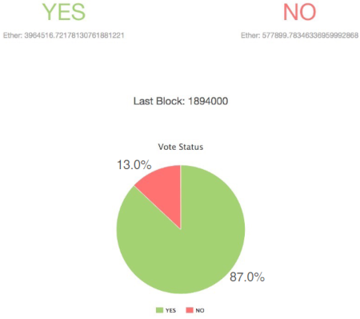
The ETH vote on the DAO fork.
The votes were advisory in nature: there was no hard agreement that the results would determine what happens. But they helped give core developers the confidence to actually implement a series of EIPs, knowing that the mass of the community would be behind them. Today, we have access to proofs of community membership that are much richer than token holdings: POAPs, Gitcoin Passport scores, Zu stamps, etc.
From these things all together, we can start to see the second vision for how the crypto space can evolve to better meet the concerns and needs of the 21st century: create a more holistic trustworthy, democratic, and decentralized tech stack. Zero knowledge proofs are key here in expanding the scope of what such a stack can offer: we can get beyond the false binary of "anonymous and therefore untrusted" vs "verified and KYC'd", and prove much more fine-grained statements about who we are and what permissions we have. This allows us to resolve concerns around authenticity and manipulation - guarding against "the Big Brother outside" - and concerns around privacy - guarding against "the Big Brother within" - at the same time. This way, crypto is not just a finance story, it can be part of a much broader story of making a better type of technology.
4
But how, beyond telling stories do we make this happen? Here, we get back to some of the issues that I raised in my post from three years ago: the changing nature of motivation. Often, people with an overly finance-focused theory of motivation - or at least, a theory of motivation within which financial motives can be understood and analyzed and everything else is treated as that mysterious black box we call "culture" - are confused by the space because a lot of the behavior seems to go against financial motives. "Users don't care about decentralization", and yet projects still often try hard to decentralize. "Consensus runs on game theory", and yet successful social campaigns to chase people off the dominant mining or staking pool have worked in Bitcoin and in Ethereum.
It occurred to me recently that no one that I have seen has attempted to create a basic functional map of the crypto space working "as intended", that tries to include more of these actors and motivations. So let me quickly make an attempt now:
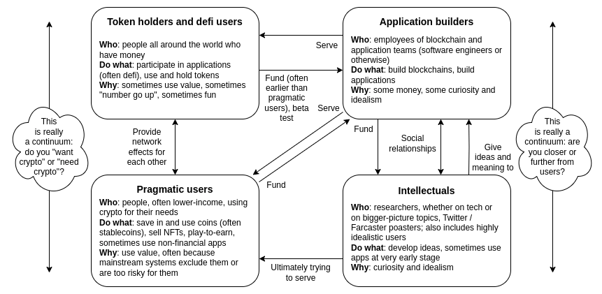
This map itself is an intentional 50/50 mix of idealism and "describing reality". It's intended to show four major constituencies of the ecosystem that can have a supportive and symbiotic relationship with each other. Many crypto institutions in practice are a mix of all four.
Each of the four parts has something key to offer to the machine as a whole:
And each of the four groups has complicated motivations, which interplay with the other groups in all kinds of complicated ways. There are also versions of each of these four that I would call "malfunctioning": apps can be extractive, defi users can unwittingly entrench extractive apps' network effects, pragmatic users can entrench centralized workflows, and intellectuals can get overly worked up on theory and overly focus on trying to solve all problems by yelling at people for being "misaligned" without appreciating that the financial side of motivation (and the "user inconvenience" side of demotivation) matters too, and can and should be fixed.
Often, these groups have a tendency to scoff at each other, and at times in my history I have certainly played a part in this. Some blockchain projects openly try to cast off the idealism that they see as naive, utopian and distracting, and focus directly on applications and usage. Some developers disparage their token holders, and their dirty love of making money. Still other developers disparage the pragmatic users, and their dirty willingness to use centralized solutions when those are more convenient for them.
But I think there is an opportunity to improve understanding between the four groups, where each side understands that it is ultimately dependent on the other three, works to limit its own excesses, and appreciates that in many cases their dreams are less far apart than they think. This is a form of peace that I think is actually possible to achieve, both within the "crypto space", and between it and adjacent communities whose values are highly aligned.
5
One of the beautiful things about crypto's global nature is the window that it has given me to all kinds of fascinating cultures and subcultures around the world, and how they interact with the crypto universe.
I still remember visiting China for the first time in 2014, and seeing all the signs of brightness and hope: exchanges scaling up to hundreds of employees even faster than those in the US, massive-scale GPU and later ASIC farms, and projects with millions of users. Silicon Valley and Europe, meanwhile, have for a long time been key engines of idealism in the space, in their two distinct flavors. Ethereum's development was, almost since the beginning, de-facto headquartered in Berlin, and it was out of European open-source culture that a lot of the early ideas for how Ethereum could be used in non-financial applications emerged.
A diagram of Ethereum and two proposed non-blockchain sister protocols Whisper and Swarm, which Gavin Wood used in many of his early presentations.
Silicon Valley (by which, of course, I mean the entire San Francisco Bay Area), was another hotbed of early crypto interest, mixed in with various ideologies such as rationalism, effective altruism and transhumanism. In the 2010s these ideas were all new, and they felt "crypto-adjacent": many of the people who were interested in them, were also interested in crypto, and likewise in the other direction.
Elsewhere, getting regular businesses to use cryptocurrency for payments was a hot topic. In all kind of places in the world, one would find people accepting Bitcoin, including even Japanese waiters taking Bitcoin for tips:
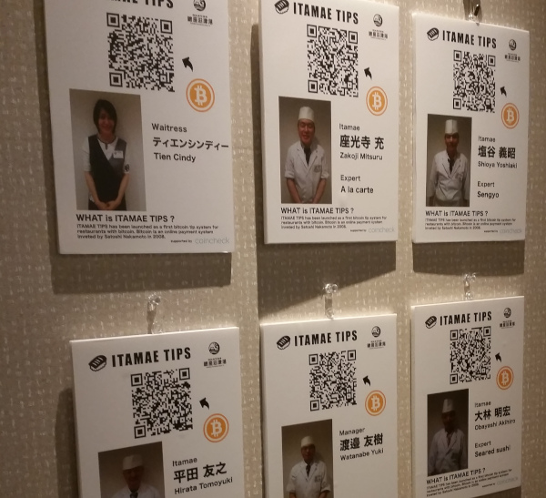
Since then, these communities have experienced a lot of change. China saw multiple crypto crackdowns, in addition to other broader challenges, leading to Singapore becoming a new home for many developers. Silicon Valley splintered internally: rationalists and AI developers, basically different wings of the same team back as recently as 2020 when Scott Alexander was doxxed by the New York Times, have since become separate and dueling factions over the question of optimism vs pessimism about the default path of AI. The regional makeup of Ethereum changed significantly, especially during the 2018-era introduction of totally new teams to work on proof of stake, though more through addition of the new than through demise of the old. Death, birth and rebirth.
There are many other communities that are worth mentioning.
When I first visited Taiwan many times in 2016 and 2017, what struck me most was the combination of capacity for self-organization and willingness to learn of the people there. Whenever I would write a document or blog post, I would often find that within a day a study club would independently form and start excitedly annotating every paragraph of the post on Google Docs. More recently, members of the Taiwanese Ministry of Digital Affairs took a similar excitement to Glen Weyl's ideas of digital democracy and "plurality", and soon posted an entire mind map of the space (which includes a lot of Ethereum applications) on their twitter account.
Paul Graham has written about how every city sends a message: in New York, "you should make more money". In Boston, You really should get around to reading all those books". In Silicon Valley, "you should be more powerful". When I visit Taipei, the message that comes to my mind is "you should rediscover your inner high school student".
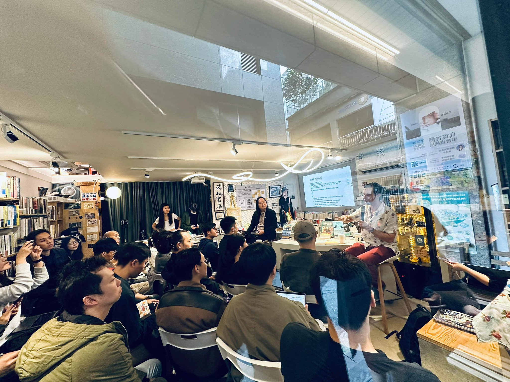
Glen Weyl and Audrey Tang presenting at a study session at the Nowhere book shop in Taipei, where I had presented on Community Notes four months earlier
When I visited Argentina several times over the past few years, I was struck by the hunger and willingness to build and apply the technologies and ideas that Ethereum and the broader cryptoverse have to offer. If places like Siilicon Valley are frontiers, filled with abstract far-mode thinking about a better future, places like Argentina are frontlines, filled with an active drive to meet challenges that need to be handled today: in Argentina's case, ultra-high inflation and limited connection to global financial systems. The amount of crypto adoption there is off the charts: I get recognized in the street more frequently in Buenos Aires than in San Francisco. And there are many local builders, with a surprisingly healthy mix of pragmatism and idealism, working to meet people's challenges, whether it's crypto/fiat conversion or improving the state of Ethereum nodes in Latin America.
Myself and friends in a coffee shop in Buenos Aires, where we paid in ETH.
There are far too many others to properly mention: the cosmopolitanism and highly international crypto communities based in Dubai, the growing ZK community everywhere in East and Southeast Asia, the energetic and pragmatic builders in Kenya, the public-goods-oriented solarpunk communities of Colorado, and more.
And finally, Zuzalu in 2023 ended up creating a beautiful floating sub-community of a very different kind, which will hopefully flourish on its own in the years to come. This is a significant part of what attracts me about the network states movement at its best: the idea that cultures and communities are not just something to be defended and preserved, but also something that can be actively created and grown.
6
There are many lessons that one learns when growing up, and the lessons are different for different people. For me, a few are:
There is a long tail of these that each person learns, and in principle I could go for longer. But there's also a limit to how much it's actually possible to learn from simply reading other people's experiences. As the world starts to change at a more rapid pace, the lessons that are available from other people's accounts also become outdated at a more rapid pace. So to a large extent, there is also no substitute for simply doing things the slow way and gaining personal experience.
7
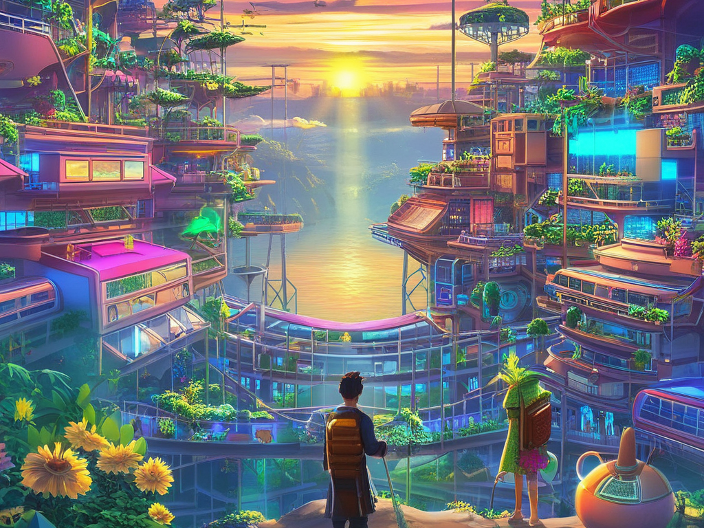
Every beautiful thing in the social world - a community, an ideology, a "scene", or a country, or at the very small scale a company, a family or a relationship - was created by people. Even in those few cases where you could write a plausible story about how it existed since the dawn of human civilization and the Eighteen Tribes, someone at some point in the past had to actually write that story. These things are finite - both the thing in itself, as a part of the world, and the thing as you experience it, an amalgamation of the underlying reality and your own ways of conceiving and interpreting it. And as communities, places, scenes, companies and families fade away, new ones have to be created to replace them.
For me, 2023 has been a year of watching many things, large and small, fade into the distance of time. The world is rapidly changing, the frameworks I am forced to use to try to make sense of the world are changing, and the role I play in affecting the world is changing. There is death, a truly inevitable type of death that will continue to be with us even after the blight of human biological aging and mortality is purged from our civilization, but there is also birth and rebirth. And continuing to stay active and doing what we can to create the new is a task for each one of us.